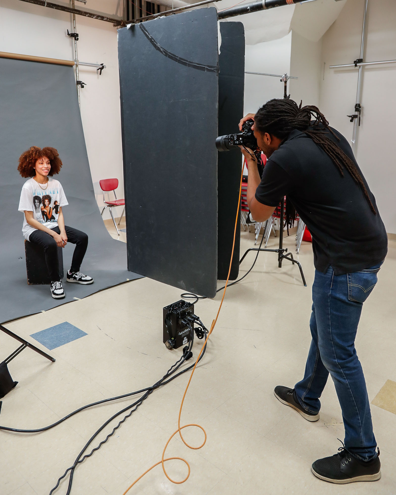

About
Henry Lux
Henry Lux is a New York-based photographer working in portraits, product and still life photography, and event documentation.
Photography became a way for Henry to slow down and pay closer attention to people, objects, light, and the small details that can easily be overlooked. His work is shaped by a love for controlled lighting, texture, expression, and the quiet moments that reveal something honest about a subject.
Henry’s development as a photographer has been shaped by coursework in photography, studio lighting, and studio art at the School of Visual Arts, LaGuardia Community College, and Hunter College, CUNY, where he is currently pursuing a bachelor’s degree in Studio Art. His work has also been recognized through an Arnold & Augusta Newman Foundation Scholarship at LaGuardia Community College.
In portrait work, Henry focuses on creating images that feel natural, confident, and true to the person. In product and still life work, he uses light and composition to bring attention to shape, surface, color, and form. When documenting events, Henry focuses on people, atmosphere, and meaningful moments with care.
Henry is available for portraits, headshots, product photography, artwork documentation, small events, and institutional photography for businesses, colleges, organizations, and community programs.
Contact